메타스콜레
메타스콜레교재 소개
직접 만든 교재로 가르칩니다
시중 교재만으로는 학생마다 비어 있는 부분을 채우기 어렵습니다. 그래서 과정과 학교에 맞춰 교재를 직접 만듭니다.
SIGNATURE 시그니처 과정 교재
고등 국어 마스터
학력평가 기출 교재
고1A · 고1B · 고2 · 고3 학년별로 각 7회분씩 만든 교재입니다. 회마다 수능 기출 어휘 · 학평 문학 · 문법 · 독서를 한 묶음으로 공부하고, 고등학교 학력평가 · 평가원 모의고사 · 수능 기출 문항을 골라 담았습니다. 수업 보기 →
- 어휘 — 한자성어의 뜻과 한자 풀이 정리, 문제로 익히기
- 문법 — 한글 맞춤법 · 표준 발음법 개념 정리와 연습문제, 기출 문항
- 문학 — 「임경업전」 · 「구운몽」 · 「이생규장전」 등 고전 소설 지문
- 독서 — 이자율과 소비, 물가지수, 과징금 제도 등 사회 · 경제 지문
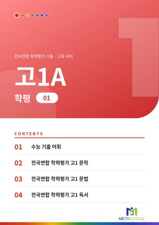
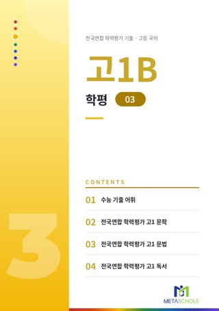
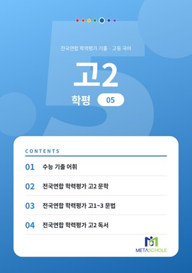
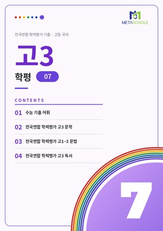
중학 · 고등 국어 마스터
어휘력 마스터 단어장
중학 · 고등 국어 마스터 반에서 쓰는 자체 단어장입니다. 교과서와 시험에 나오는 국어 어휘를 4개 영역으로 정리했습니다. 수업 보기 →
- 어휘의 사전적 의미 — 고유어 · 한자어 · 고유어와 한자어의 대응
- 어휘의 관계별 의미 — 유의 · 반의 · 상하 · 동음이의 · 다의 관계
- 어휘의 관용적 의미 — 관용어 · 속담 · 한자성어
- 어휘의 정확한 사용 — 어문 규정 · 헷갈리는 표기 · 문장 다듬기
독해랑 창의랑
독해랑 창의랑 단계별 교재
메타스콜레에만 있는 독해 전문 프로그램의 교재입니다. 입문부터 최상까지 6단계로, 단계마다 여러 권이 이어집니다. 입학 테스트로 시작 단계를 정합니다. 프로그램 보기 →

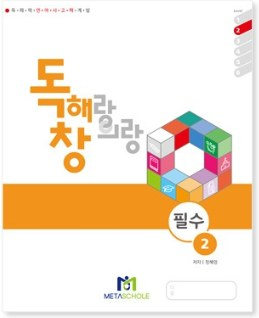


초등 국어 마스터 · 문해력 수업
독서 노트
명작과 필독서를 읽고 줄거리 확인, 어휘 정리, 요약, 생각 쓰기까지 이어지는 자체 활동지입니다. 쓴 글은 하나하나 직접 첨삭합니다.
- 줄거리 빈칸 채우기로 내용 확인
- 꼼꼼히 들여다보기 · 뒷이야기 상상하기 · 친구에게 소개하기
- OREO 글쓰기로 주장 · 근거 · 예시 정리
- 필독서는 문단별 가이드에 따라 완성된 독서 감상문으로
내신 · 특강 교재
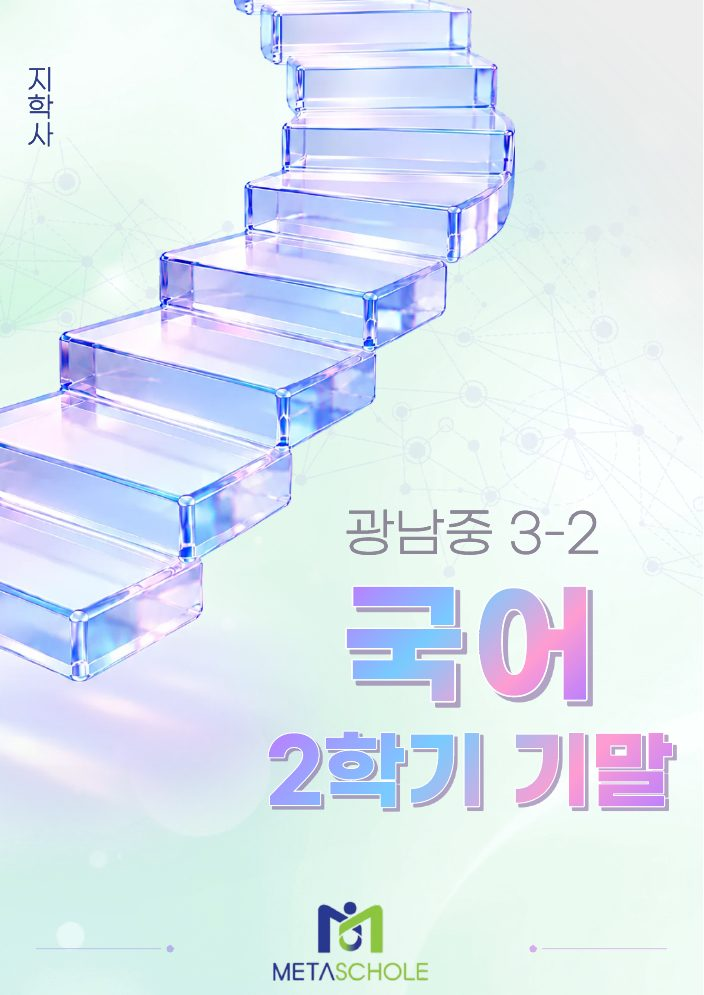
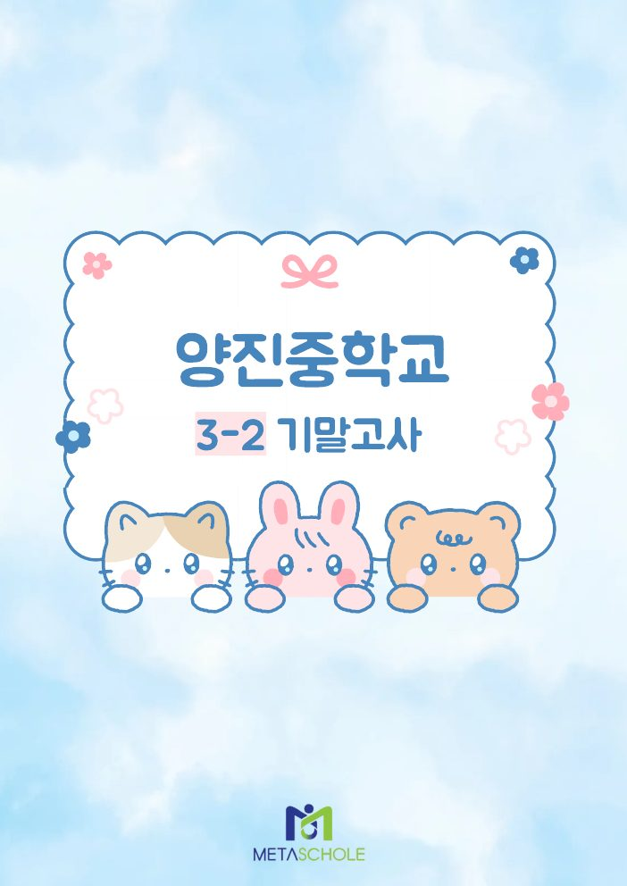
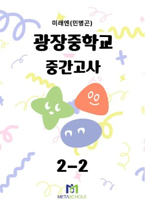
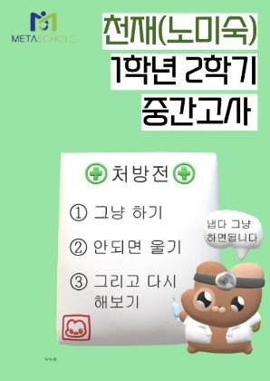
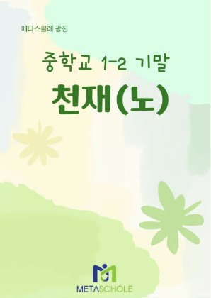
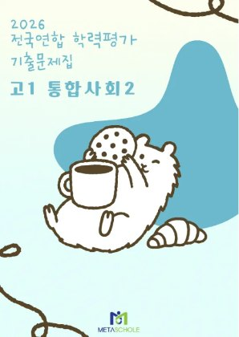
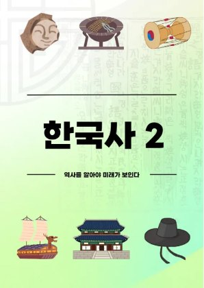
입학 테스트 · 상담 02-455-4145
테스트로 실력을 확인한 뒤 결과를 바탕으로 상담해 드립니다.